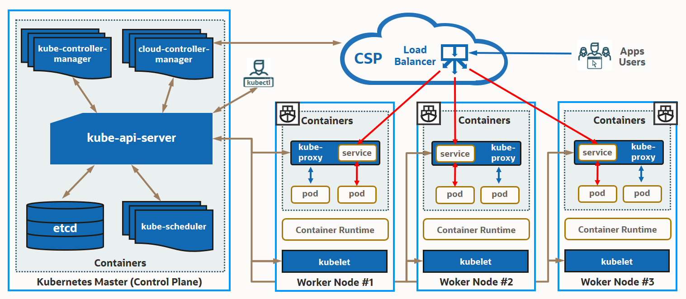
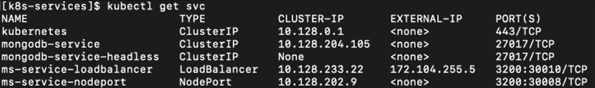

OCI OKE(Oracle Kubernetes Engine) 따라하기 by Velucid ⏲ May 13, 2021
개인적으로 스터디 중인 OCI OKE(Oracle Kubernetes Engine)를 예제 중심으로 정리해 봅니다.
Kubernetes(K8S)는 크게 관리를 담당하는 Control Plane과 실제 Container가 운영되는 Cluster Node로 구성됩니다. Management Node와 Worker Node로 구분되기도 합니다. OCI(Oracle Cloud Infrastructure)와 같은 대표적인 CSP(Cloud Service Provider)와 연동하여, CSP가 제공하는 Load Balancer를 바로 연동하여 외부 사용자에게 애플리케이션을 제공할 수 있습니다.

이미지 참조: https://v1-18.docs.kubernetes.io/ko/docs/concepts/overview/components/
클러스터 전체를 제어하는 관리 역할을 수행합니다. 노드에 배포되는 형상을 자동으로 유지, 새로운 변경 사항을 반영, 확장하는 등 클러스터 내의 모든 애프리케이션 활동을 조율하고 라이프사이클을 관리합니다.
| Process | Description |
|---|---|
| API Server (kube-apiserver) | 쿠버네티스 클러스터를 제어 및 관리하는 게이트웨이 역할을 수행하며, 클러스터 컴포넌트, 오브젝트 및 사용자, 외부 컴포넌트가 서로 통신하고 작업을 요청 할 수 있는 RESTful API를 제공합니다. 사용자는 kubectl 커맨드 라인 인터페이스를 통해 API Server에 작업을 요청 가능하며, Go, Python, Java 언어 기반의 SDK(클라이언트 라이브러리)를 통해 직접 접근할 수 있습니다. |
| etcd | 클러스터내의 모든 데이터와 오브젝트 정보를 저장하는 유일한 저장소(distributed key-value store)이며, 데이터 일관성과 고가용성을 제공합니다. 빌트인 스냅샷을 통한 백업이 가능합니다. |
| Scheduler (kube-scheduler) | 새로운 Pod(컨테이너 그룹)를 적절한 자원 및 운영 요건의 노드를 찾아 배포하고 실행해주는 역할을 수행합니다. 설정 가능한 스케줄 조건: HW/SW 조건, 리소스 제한, Quota 정책, 보안 정책, 노드 특성(affinity - 위치, 형상, 레이블) 등 |
| Controller Manager | kube-controller-manager - 쿠버네티스 파드와 노드를 관리하는 프로세스들의 집합 1. Node Controller - 노드 다운을 감시하여 조치 2. Job Controller - Job의 task에 따라 파드를 생성하고 수행 완료 3. Endpoint Controller - 서비스(네트워크, 로드밸런서)와 파드를 연결 4. Service Account & Token Controller - 새로운 네임스페이스에 대한 기본 계정과 API 접근 토큰 생성 cloud-controller-manager - 클라우드 서비스 제공자(CSP)의 서비스 API와 쿠버네티스 클러스터를 상호 연계합니다. 1. Node Controller - 클라우드 서비스 노드의 다운을 감시 2. Route Contorller - 클라우드 인프라로의 경로(Route) 구성 3. Service Controller - CSP 로드밸런서 서비스를 생성, 업데이트 그리고 삭제 |
사용자 애플리케인션이 실제 동작하는 물리적인 컴퓨팅 노드이며, 워크로드 규모에 따라 다수의 노드들이 클러스터를 구성하여 운영됩니다. 모든 클러스터 노드에서 동작하는 노드 컴포넌트들은 개별 노드에서 운영중인 파드를 유지키시고 쿠버네티스 런타임 환경을 제공합니다.
| Process | Description |
|---|---|
| Kubelet | 개별 노드를 관리하는 "노드 에이전트" 역할을 수행합니다. Control Plane의 API Server에서 전달된 PodSpec (YAML, JSON 파일)에서 기술된 컨테이너가, 파드에서 실행되고 문제없이 유지되도록 관리합니다. |
| Kube-Proxy | 개별 노드에서 작동하는 "네트워크 프락시"로서 클러스터 내부/외부로부터 트래픽을 제어하며, 개별 컨테이너를 접근하기 위한 네트워킹(IP, Port) 및 로드밸러스와 같은 "서비스"를 구현합니다. (구체적인 내용은 서비스 부문 참조) |
쿠버네티스 시스템에는 클라우드 운영을 위한 다양한 용도의 오브젝트와 이에 대한 기능들이 제공됩니다. 매우 복잡한 분류 체계를 가지기 때문에 쿠버네티스 시스템을 운영하고 이해하는데 핵심적인 개념 및 구성 요소들을 살펴봅니다.
| Component | Description |
|---|---|
| POD | 파드(포드)는 쿠버네티스에서 생성하고 관리하는 가장 작은 단위의 배포(스케줄링) 가능한 컴퓨팅 유닛이며, 노드내의 스토리지와 네트워크 리소스를 공유하는 하나 또는 다수의 컨테이너 그룹으로 구성됩니다. 이는 동일한 파드에 속하는 컨테이너들은 동일한 물리적인 노드에 위치한다는 것을 의미합니다. ("Pod of Whales - 고래의 무리"에서 차용된 용어) Pod와 Container는 다소 혼재되어 사용되는 용어이며, 이는 하나의 컨테이너만 포함하는 Pod가 흔하게 사용되기 때문입니다. 하지만 복잡한 애플리케이션에서는 다수의 컨테이너들이 동일한 Pod를 통해 배포됩니다. 일부 Pod는 애플리케이션 컨테이너 뿐만 아니라 초기화 목적의 컨테이너를 갖고 있으며, 이는 애플리케이션 컨테이너가 시작되기 전에 실행되고 완료됩니다. |
| Container Runtime | 컨테이너 런타임은 파드 내의 컨테이너를 구동해주는 소프트웨어이며, 쿠버네티스는 Docker, containerd, CRI-O, Kubernetes CRI(Container Runtime Interface) 등 다양한 컨테이너 런타임을 지원합니다. |
| Kubernetes Object | 쿠버네티스 시스템에서 영속성을 가지는 모든 리소스들(파드, 애플리케이션 컨테이너, 서비스, 볼륨 등)은 오브젝트로 관리됩니다. 대부분 yaml 파일로 대상 오브젝트의 스펙과 상태를 기술하여 배포하며, 쿠버네티스 시스템은 해당 오브젝트의 생성 및 상태 유지를 보장하기 위해서 지속적으로 모니터닝 및 적절한 역할을 수행합니다. 쿠버네티스 오브젝트의 생성, 수정 및 삭제는 쿠버네티스 API Server를 통해서 관리됩니다. |
| Workload | 워크로드는 일련의 Pod 집합 내에서 구동되는 컨테이너 기반 애플리케이션입니다. 워크로드가 구동되는 파드 집합에 대한 라이프사이클 관리는 워크로드 리소스를 통해 수행됩니다. 사용자는 자신의 워크로드의 목적에 부합하는 워크로드 리소스를 선언적(YAML)으로 정의하고, Controller는 적합한 파드 집합을 찾아 이를 배포해주고 변경 및 관리해줍니다. |
| - | Workload Resource의 종류는 다음과 같습니다. 1. Deployment - 가장 기본적인 애플리케이션 배포 방식이며, Pod에 대한 생성, 변경, 업그레이드 및 삭제를 관리합니다. ReplicaSet의 상위 개념이며, 다수의 ReplicaSet을 구성하고 관리합니다. 2. ReplicaSet - 가용성 및 워크로드 분산을 위해서 동일한 Pod를 여러 리플리카로 복제하고 구성을 유지합니다. 3. StatefulSet - 동일한 스펙으로 확장된 파드 집합(예: DB Replica)이더라도, 개별 파드의 상태와 독립성을 유지해줍니다. 4. Job - 사용자가 지정한 Job이 지정된 수의 파드에서 수행되고 완료될때까지 파드를 기동하고 정리합니다. (병렬 수행도 가능) 5. CronJob - 일정에 따라 반복적으로 수행되는 잡을 생성합니다. 일정은 kube-controller-manager의 시간대가 기준이 됩니다. 6. DeamonSet - 스토리지 데모, 로그 수집 데몬, 노드 모니터링 데몬 등과 같이 특수 목적으로 항상 실행되는 파드를 관리합니다. 7. TTL Controller - 현재 Job만 지원하며, 실행이 완료된 리소스 오브젝트를 정리하는 TTL (Time to Live) 메커니즘을 제공합니다. 8. Replication Controller - 지정된 수의 파드 레플리카가 항상 유지되도록 관리합니다. 9. Garbage Collection - 더 이상 유효한 소유자가 없는 오브젝트를 정리합니다. |
| Service | Service(서비스)는 여러 파드의 집합에 걸쳐 동작하는 컨테이너(애플리케이션)에게 외부와의 연속적인 네트워크 서비스를 제공하기 위한 네트워크 가상화 기능입니다. Pod는 라이프사이클(재시작/변경)에 따라 동적으로 IP 주소가 바뀌기 때문에, 이에 영향 받지 않고 애플리케이션에 접근 가능한 네트워크 가상화가 필요합니다. 쿠버네티스는 Proxy(인바운드 트래픽을 백엔드로 포워딩)를 통해 주요 네트워크 서비스를 구현하며, 클러스터 내부와 외부에서 애플리케이션을 연결해주는 다양한 접근 경로를 재공합니다. |
| - | * Node, Service, Pod는 서로 별개의 IP와 port를 가집니다. Service는 Cluster 외부는 물론 Cluster 내부의 Node 및 Pod간의 네트워크 경로를 설정하고 통제합니다. 1. Cluster IP - 가장 기본적인 서비스이며, 클러스터 내부에서만 접근 가능한 Cluster IP와 port를 파드 레벨에서 제공해 줍니다. 2. NodePort - Cluster IP 서비스를 확장한 것으로, 클러스터 외부에서 접근 가능한 Node IP와 port를 Node 레벨에서 제공해 준다. (보안을 위해서 클러스터 외부(인터넷)에서의 접근은 Load Banancer와 Ingress를 사용하도록 권고. 단, 사설망에서만 OKE를 운영하는 경우에는 NodePort도 사용 가능) 3. LoadBalancer - 인터넷과 같은 클러스터 외부 네트워크와 쿠버네티스 서비스를 연결하는 가장 표준적인 방법입니다. NodePort 서비스를 확장한 것으로, CSP에서 제공하는 L4 로드 밸런서를 이용하여 트래픽을 NodePort 서비스에 전달합니다. OCI OKE를 사용하면 자동으로 OCI Load Balancer가 생성되며, 이를 위한 서브넷간의 보안 접근 룰도 함께 설정됩니다.  5. Headless Service - ClusterIP를 Node으로 설정하여 Stateful DB와 같은 특정 파드 하나와 직접 통신하기 위한 용도로 사용합니다. 6. Multi-Port - 동일 파드 내에 여러 개의 port를 구성해줍니다. 개별 port는 name을 지정하여 구분합니다. 7. ExternalName - Proxy를 사용하지 않고 Kubernetes DNS를 통해 직접 외부로 노출하는 방식입니다. |
| Namespace | 동일한 물리 클러스터를 공유하는 여러 개의 가상 클러스터를 구분하는 목적으로 네임스페이스를 제공합니다. 여러 개의 팀이나 프로젝트에 걸처서 다수의 사용자가 K8S 클러스터를 공유하는 환경에서 유용합니다. 리소스 쿼터를 통해 클러스터 자원을 네임스페이스 단위로도 분배 가능합니다. [기본 네임스페이스] default, kube-system, kube-public, kube-node-lease |
| Volume | 도커 컨테이너에서 제공되는 휘발성 스토리지의 문제점을 극복하기 위해, 쿠버네티스 시스템은 컨테이너에서 영구적으로 사용가능한 스토리지 볼륨을 제공합니다. |
ClusterIP, Load Balancer Service의 생성 과정은 실제 예제를 통해 알아 보도록 하겠습니다. MongoDB 기반 방명록 애플리케이션 배포
참고 자료
쿠버네티스 컴포넌트 Kubernetes Concepts and Architecture Kubernetes: The Complete Guide Kubernetes Glossary